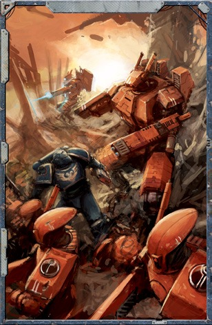

一旦角色积累并花费了足够的经验，就可以正常进入角色的下一个等级。角色可能会在以后的等级中发现，他为了采用备选职业等级所进行的路线偏离使他失去了某些技能，这些技能是角色可能希望拥有的某些提升的前置条件。要获得它们，玩家必须以精英提升的形式获得它们。或者，玩家可能会发现继续发展他的角色在他的备选职业等级中获得的新提升是一种进一步个性化角色，并弥补未采取的道途中错过的机会的方法。
在与拉克’戈尔进行了一场胜之不易的战斗之后，战斗服驾驶员巴'索意识到了他作为战场指挥官的使命。因此，他希望购买本应从火战士3级中获得的气势威严天赋。为此，他的GM允许他取得这一提升，但前提是巴'索花费了时间在他的母舰上的武装人员之中以追求扮演这样一个角色。然后他必须支付600xp来购买天赋，而不是300xp，这是基本成本的两倍，正如购买精英提升规则所建议的那样。
